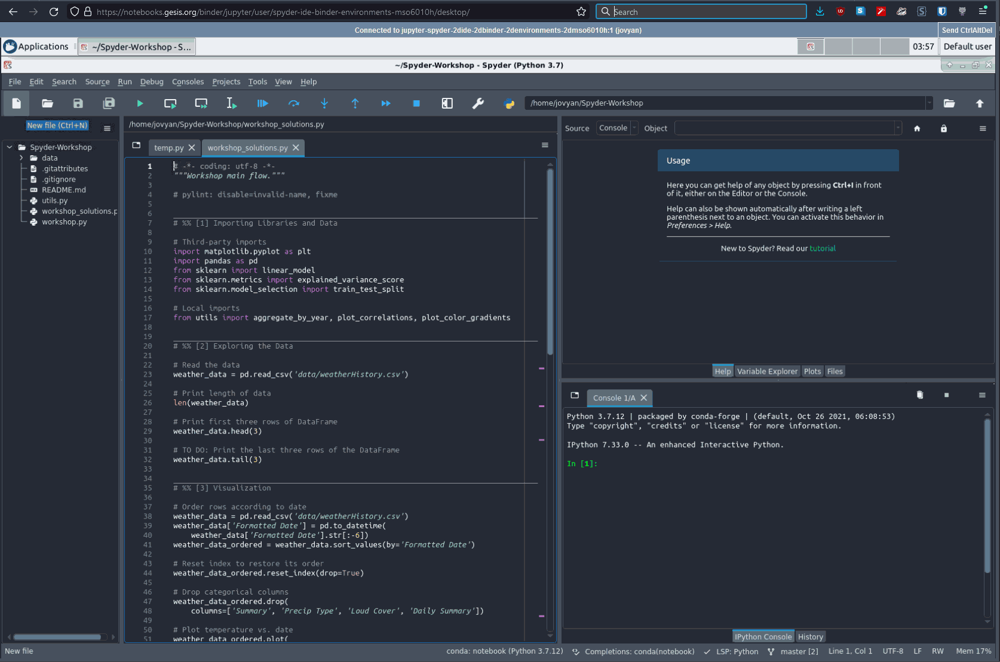
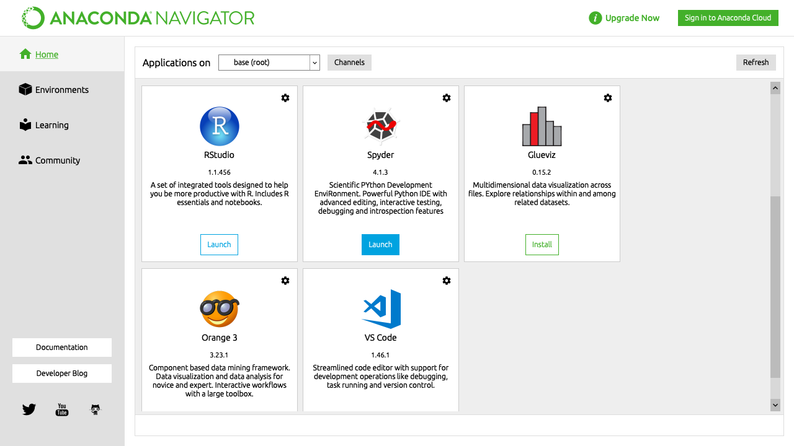

Install Guide#
Spyder is relatively easy to install on Windows, Linux and macOS. Just make sure to read and follow these instructions with care.
If you run into problems, before posting a report, please consult our comprehensive troubleshooting guide and search the issue tracker for your error message and problem description. These methods generally fix or isolate the great majority of install-related difficulties. Thanks!
Note
For most users on Windows and macOS, we recommend our Standalone installers as the most straightforward and robust option to obtain Spyder. For users needing Linux support, third-party Spyder plugins or Variable Explorer compatibility with custom-installed packages—all capabilities which the standalone installers currently do not yet provide—we advise using a Conda-based distributions. Linux, plugin and package/environment management support in the standalone installers are currently under active development for future Spyder versions.
Try Spyder online#
Want to try out Spyder without installing it? With Binder you can work with a fully functional copy of Spyder online that runs right in your web browser, no installation needed. Visit the Spyder Binder to get started using Spyder.
Standalone installers#
The standalone installers are our recommended method for most users on Windows and macOS, with experimental Linux support under active development. They work like any other IDE, where Spyder can be installed and updated independently of the Python environments you use to run your code. This avoids the problems with incompatible packages and broken installations users often face when mixing Spyder with the (Conda, etc) environments they use to run their code.
The installers include a built-in Python environment with the most common scientific libraries (e.g. NumPy, Pandas, Matpotlib, etc), which can be used out of the box for basic data analysis tasks. However, to manage your own packages and environments, you’ll currently need to connect an external Python distribution (such as Anaconda, Miniconda, Miniforge/Mambaforge, WinPython or Python.org) to your standalone copy of Spyder. For more information on this, see our FAQ entry on the subject.
Note
The standalone installers do not yet support installing third-party Spyder plugins not already bundled with them, though this feature is currently under development. For now, if you need this capability, we recommend a Conda-based distributions.
Downloading and installing#
To download the supported Spyder installer for your platform, simply click the appropriate link below (for Linux, see the Conda-based distributions section). Then, double-click the downloaded file to open the installer. If a security warning pops up, you may need to click Yes, OK, Open, Allow or similar.
On Windows, if a “SmartScreen” dialog appears, click More info followed by Run anyway, and then proceed through the steps in the installer.
On macOS, open the disk image and drag Spyder to your Applications folder.
Note
“Lite” versions of both installers are also available from the releases page, which are somewhat smaller than the full installers. These lack a number of optional but recommended dependencies, such as NumPy, SciPy and Pandas, meaning that a few Variable Explorer features, including graphical data import wizards and support for rich display and editing of NumPy arrays and Pandas DataFrames, will not be available. Given this only saves a modest amount of space while missing out on significant features, we recommend using the full installers unless minimizing download/install size and memory usage is a priority.
Running from a standalone install#
To run Spyder when installed standalone, you can simply use your operating system’s typical method of launching applications, such as opening it from the Start menu on Windows (or the Taskbar, if you’ve pinned it there), or from Launchpad, Spotlight or the Applications folder on macOS (or the Dock, if you’ve added it there).
Updating a standalone install#
By default, Spyder checks for updates automatically on startup, and you can also check manually with . The standalone installers for Spyder 5.4.0+ include update functionality built right into Spyder, which after checking for updates will display a prompt to automatically download and install the current version. On earlier versions, you’ll need to manually download and install the latest release (if on Windows, make sure to remove the old version first from Control Panel/System Settings).
Conda-based distributions#
Spyder is included by default in the Anaconda Python distribution, which comes with everything you need to get started in an all-in-one package. It can also be easily installed in the much lighter-weight Miniconda and Miniforge/Mambaforge, which include just Python and the Conda/Mamba package and environment manager by default (with Miniforge defaulting to the Conda-Forge channel, and Mambaforge using Mamba, a much faster alternative to Conda). This is our recommended installation method on Linux and for users with third-party Spyder plugins, as support for both of these in our standalone installers is still under active development.
Conda environment#
With Miniconda/Miniforge/Mambaforge, or to get a more reliable and up-to-date Spyder version with Anaconda, we strongly recommend installing Spyder into its own dedicated Conda environment.
Note
If using Mamba/Mambaforge, substitute mamba for conda in the following commands.
Installing with Conda#
For a full install of Spyder and all optional dependencies, run the following command in your Anaconda Prompt (Windows) or terminal:
conda create -c conda-forge -n spyder-env spyder numpy scipy pandas matplotlib sympy cython
For a minimal install without the optional functionality and integration with the above packages, you can instead run:
conda create -c conda-forge -n spyder-env spyder
This installs Spyder into a new environment called spyder-env, using the more up-to-date, community-run Conda-Forge channel.
To make sure future installs/updates in this environment also use Conda-Forge and are faster and more reliable, make sure to set it as your environment’s default channel with strict channel priority enabled, if this isn’t the case already (as it is with Miniforge/Mambaforge or if you’ve manually configured it):
conda activate spyder-env
conda config --env --add channels conda-forge
conda config --env --set channel_priority strict
Here’s a summary of the main steps.

Running with Conda#
You can then run Spyder by the same methods as with Anaconda, except that you need to make sure to launch the Start menu shortcut with (spyder-env) in the name, select the spyder-env environment on the left before launching it with Navigator, or type conda activate spyder-env before launching it on the command line.
See our FAQ question for more information about how to use Spyder with your existing Conda environments.
Updating with Conda#
With any Conda-based distribution and Spyder installed in its own environment (recommended), update Conda itself, active the environment, and finally update Spyder. In your system terminal (or Anaconda Prompt if on Windows), run:
conda update -n base conda
conda activate spyder-env
conda update spyder
In case you get an error trying to update, just remove the existing environment (if using one other than base):
conda remove -n spyder-env --all
And then recreate a fresh one.
Anaconda base#
While we recommend always using a dedicated environment, with Anaconda you can also run the bundled copy of Spyder from the built-in base environment.
Caution
The bundled Spyder version can often be quite out of date, missing new features and bug fixes from the latest version, and if you install, change or remove other packages, there is a significant chance of dependency conflicts or a broken Spyder installation. Therefore, we recommend installing Spyder into a new Conda environment to avoid all these issues.
Running with Anaconda#
To run the bundled version of Spyder after installing it with Anaconda, the recommended method on Windows is to launch it via the Start menu shortcut. On other platforms, open Anaconda Navigator, scroll to Spyder under Home and click Launch.
If Spyder does not start via this method or you prefer to use the command line, open Anaconda Prompt (Windows) or your terminal (other platforms), type conda activate base then spyder.
Updating with Anaconda#
With Spyder installed in Anaconda’s base environment, first update the anaconda meta-package, and then Spyder itself (in case there is a newer version than that pinned to the anaconda metapackage).
In your system terminal (or Anaconda Prompt if on Windows), run:
conda update anaconda
conda install spyder=5.4.3
Note
These commands also update all your other packages, which is one reason we strongly recommend you use an isolated conda environment to avoid any potential unintended effects on other installed packages.
In case you get an error resolving dependencies, try uninstalling Spyder and re-installing it:
conda remove spyder
conda install spyder
Using pip#
Caution
While this installation method is a viable option for experienced users, installing Spyder (and other PyData-stack packages) with pip can sometimes lead to tricky issues, particularly on Windows and macOS. While you are welcome to try it on your own, we are typically not able to provide individual support for installation problems with pip, except to recommend our Standalone installers (Windows and macOS) or a Conda-based distributions.
You can install Spyder with the pip package manager, which is included by default with most Python installations. Before installing Spyder itself by this method, you need to download the Python programming language.
Note
Due to a known issue with some DEB-based Linux distributions (Debian, Ubuntu, Mint), you might also need to install the pyqt5-dev-tools package first, with sudo apt install pyqt5-dev-tools.
You’ll first want to create and activate a virtual environment in which to install Spyder, via one of the following methods.
With virtualenvwrapper:
mkvirtualenv spyder-env
workon spyder-env
Otherwise, on macOS/Linux/Unix:
python3 -m venv spyder-env
source spyder-env/bin/activate
or on Windows:
python -m venv spyder-env
spyder-env\Scripts\activate.bat
After activating your environment, to install Spyder and its optional dependencies, run:
pip install spyder numpy scipy pandas matplotlib sympy cython
Or for a minimal installation, run:
pip install spyder
To launch Spyder after installing it, ensure your environment is activated and run the spyder or spyder3 command.
And to update Spyder, with your Spyder environment activated, run:
pip install --upgrade spyder
Alternative methods#
Caution
While we describe alternative Spyder installation options for users who prefer them, as these are third-party distributions that we have no direct involvement in, we are usually not able to offer useful individual assistance for problems specific to installing via these alternative methods.
Also, the Spyder versions they install may be out of date relative to the current release, and thus be missing the latest features and bug fixes.
Therefore, we recommend you switch to our Standalone installers (Windows and macOS) or a Conda-based distributions if you encounter installation issues you are unable to solve on your own.
Windows#
Spyder is included in the WinPython scientific Python distribution, along with many other common numerical computing and data analysis packages. You can use Spyder immediately after installing, similar to Anaconda.
macOS#
Spyder is available as a cask through Homebrew.
To install it using the brew package manager, run:
brew install --cask spyder
It is also available as a a port through MacPorts.
To install it using the port package manager, run:
sudo port install py39-spyder
Linux#
Spyder can be installed via third-party distro packages on most common Linux distributions.
Running Spyder installed this way will generally be the same as any other distro-installed application.
Alternatively, it can be launched from the terminal with spyder (or spyder3, on older versions of some distros).
Ubuntu/Debian#
Spyder is available as a Ubuntu package and a Debian package.
To install it using the apt package manager, run:
sudo apt install spyder
Other distributions#
Spyder is also available in other GNU/Linux distributions, including:
Please refer to the links or your distribution’s documentation for how to install Spyder.
Development builds#
If you want to try the next Spyder version before it is released, you can! You may want to do this for fixing bugs in Spyder, adding new features, learning how Spyder works or just getting a taste of what the IDE can do. For more information, please see the Contributing Guide included with the Spyder source or on Github, and for further detail consult the Spyder development wiki.
Additional help#
Run in to a problem installing or running Spyder? Read our Troubleshooting Guide.
Looking for general information about Spyder and its ecosystem? See our main website.
Need to submit a bug report or feature request? Check out our Github repository.
Want development-oriented help and information? Consult our Github wiki.
Have a help request or discussion topic? Subscribe to our Google Group.
Asking a quick question or want to chat with the dev team? Stop by our Gitter chatroom.